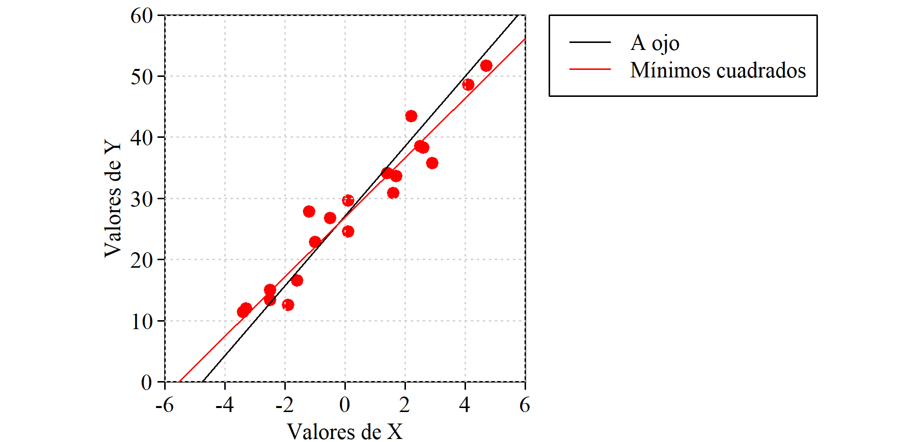
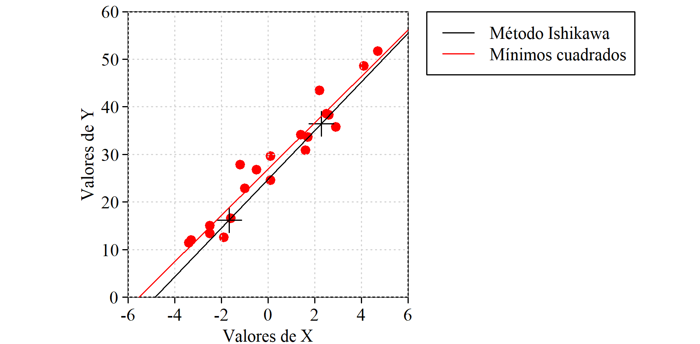
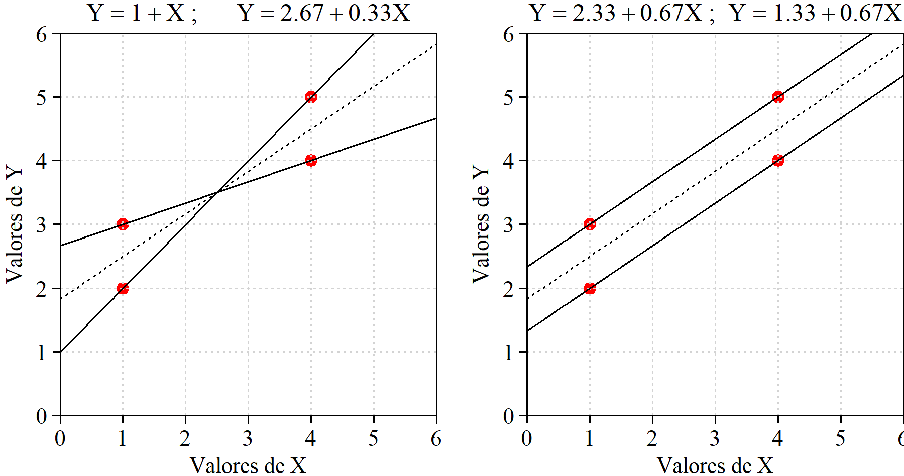
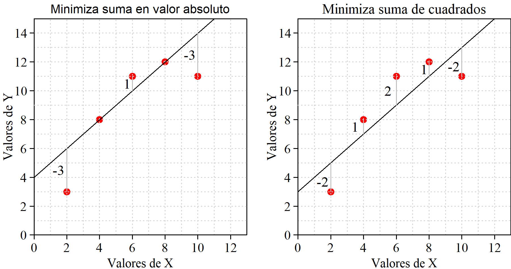
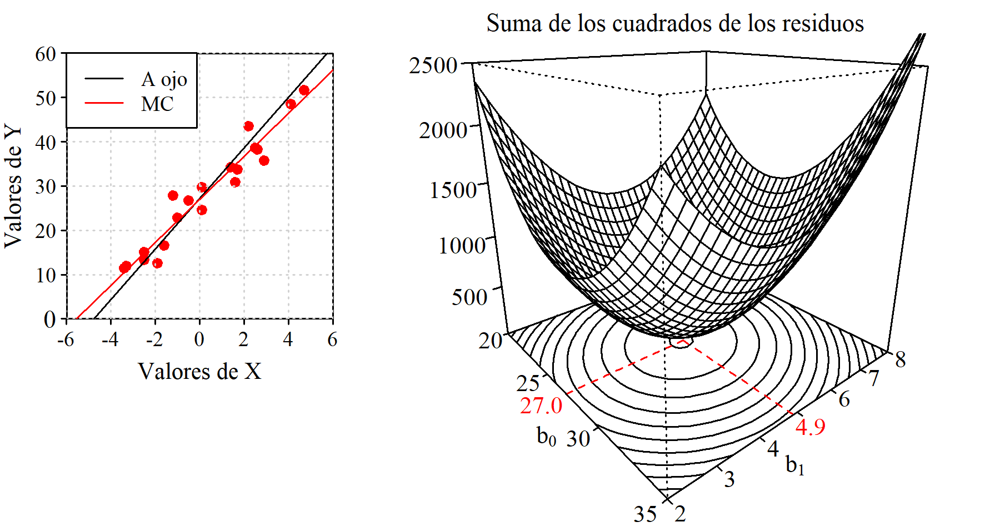

11 Regresión Simple
11.1 Definiciones
Residuos
Normalidad de la respuesta
Estimación de los parámetros
Modelo, no ecuación
Regresión simple vs. múltiple
11.2 Determinación de la recta ajustada
Se realiza con el objetivo de minimizar la suma de los cuadrados de los residuos. Pero existen otros métodos. Veamos algunos.
A ojo
Se traza la recta directamente sobre el papel o se identifican dos puntos de paso y a partir de ellos se calculan los coeficientes del modelo.
A pesar de sus evidentes limitaciones, si solo se trata de tener la recta no es un método tan malo como parece. Con un poco de práctica el ajuste no será muy distinto del “perfecto” y no se cometeran errores de bulto debido a la presencia de valores anómalos, cosa que sí puede ocurrir si se tratan los datos de forma automática sin mnirarlos.

| PROS |
|
| CONS |
|
Método de Ishikawa
Aquí texto,

| PROS |
|
| CONS |
|
Minimizando la suma de los residuos
Entendemos que se trata de minimizar la suma en valor absoluto, ya que un valor muy grande con signo negativo se logra simplemente aumentando los valores de \(b_0\) y/o de \(b_1\). Por tanto, se trata de minimizar \(|\sum(Y_i - (b_0 - b_1 X_i))|\). Haciendo esta expresión igual a cero (mínimo valor posible), tenemos:
\[ n\bar{Y} - nb_0 - b_1 n \bar{X} = 0\] Por tanto, con cualquier par de valores \(b_0\) y \(b_1\) que verifiquen la expresión \(\bar{Y} = b_0 + b_1 \bar{X}\), es decir, con cualquier recta que pase por (\(X_0\), \(Y_0\)) tendremos una suma de residuos en valor absoluto igual a cero.
Que haya infinitas rectas que cumplan esa condición ya es mala señal, porque seguro que no todas son adecuadas. Para los valores representados en la figura X tenemos que \(\bar{X}= 6\) y \(\bar{Y}= 9\). Rectas que cumplen la condicion de minimizar la suma de los residuos son, por ejemplo, la que tiene coeficientes \(b_0=9\) y \(b_1=0\), es decir: \(Y = 9\), o también \(b_0 = 12\) y \(b_1 = -0.5\), es decir: \(Y = 12 -0.5X\).

| PROS |
|
| CONS |
|
Minimizando la suma de los residuos en valor absoluto
De entrada parece bastante más razonable que el anterior. Puede no tener solución única, pero los resultados que da no son disparados como en el caso anterior *referencia a figura*. Tiene solución única pero no existen expresiones para los coeficientes debido a las dificultades en el manejo de la función “valor absoluto”.

Mas información: Wikipedia
Minizando la suma de los cuadrados de los residuos
aquí texto

11.3 Mínimos cuadrados. Cálculo de los coeficientes
Aquí texto
Con fuerza bruta
Podemos hacer una primera estimación de los coeficientes a ojo y a continuación, mediante un pequeño programa -o también usando una hoja de cálculo-, realizar un barrido de los valores de \(b_0\) y \(b_1\) en torno a los estimados, identidicando el par que minimiza la suma de los cuadrados de los residuos.
Natrualmente, es mucho más rápido y más práctico echar mano de las fórmulas de los coeficientes o -mejor todavía- usar un paquete de software o una hoja de cálculo, pero hacerlo a mano permite entender perfectamente qué es lo que se está haciendo, y también descubrir algún detalle interesante.
Vayamos a los datos de la figura Figura 11.1 (que son también los de Figura 11.2). Hemos trazado la recta ajustada a ojo de manera que pasa por los puntos (-4,75; 0) y (5,75, 60) por lo que sus coeficientes son: \(b_1\) = 5,71 y \(b_0\) = 27,14. Sería mucha casualidad que esos fueran los valores exactos que estamos buscando, pero no andarán muy lejos. Vamos a crear una malla de valores de \(b_0\) y \(b_1\). Los valores de \(b_0\) variarán de 2 a 8 con incrementos de 0,1 y para cada uno de esos, los de \(b_0\) irán de 20 a 35 también en saltos de 0,1. A cada combinación de esos dos valores corresponde a una recta, y a cada recta una suma de los cuadrados de los residuos. El par de valores que minimizan esa suma de cuadrados son: \(b_0\) = 27,0 y \(b_1\) = 4,8. Ver figura Figura 11.5.

Con los datos de nuestro ejemplo, la superficie que representa la suma de los cuadrados de los residuos es un paraboloide donde la localización del mínimo es visulamente muy clara. Pero lo nomal es que las curvas de nivel sean muy elípticas de manera que la representación no queda tan clara. Nosotros hemos logrado esa forma regular haciendo que la media de los valores de \(X\) sea igual a cero. De esta forma, los coeficientes son independientes y las curvas de nivel apararecen como círculos prácticamente concéntricos quedando más clara la idea que queremos representar.
Usando las fórmulas
En el diagrama que representa la relación entre \(X\) e \(Y\) cada punto puede ser identificado por sus coordenadas \((x_i, y_i)\) con \(1 \leq i \leq n\) siendo \(n\) el número total de puntos.
Cada uno de los puntos tiene un residuo asociado y ese residuo es la diferencia entre el valor real de \(y\), es decir, \(y_i\) y su valor estimado, el que estará sobre la recta y que será igual a \(b_0 + b_1 x_i\). Por tanto, el valor del residuo asociado al punto \(i\) lo podemos escribir de la forma:
\[ y_i - \left( b_0 + b_1 x_i \right) \] Por tanto, la suma de los cuadrados de los residuos, \(S\), será:
\[ S = \sum_{í=1}^n \left(y_i - b_0 - b_1 x_i \right )^2 \] Tanto los valores de \(y_i\) como los de \(x_i\) vienen dados. La suma de cuadrados \(S\) es función de los valores de \(b_0\) y de \(b_1\) y podemos escribir \(S \left(b_0, b_1 \right )\) y se trata de hallar los valores de \(b_0\) y de \(b_1\) que minimizan la suma de cuadrados. El mínimo lo tendremos en el punto en que la derivada de \(S \left(b_0, b_1 \right )\) respecto a \(b_0\) y respecto a \(b_1\) es igual a cero. También habrá que verificar que es un mínimo comprobando que la segunda derivada es un valor positivo.
\[ \frac{\partial S}{\partial b_0} = -2 \sum_{í=1}^n \left(y_i - b_0 - b_1 x_i \right ) \] \[ \frac{\partial S}{\partial b_1} = -2 \sum_{í=1}^n \left(y_i - b_0 - b_1 x_i \right ) x_i \] Igualando a cero estas expresiones:
\[ \sum_{í=1}^n y_i - nb_0 - b_1 \sum_{í=1}^n x_i = 0 \tag{11.1}\]
\[ \sum_{í=1}^n x_i y_i - b_0 \sum_{í=1}^n x_i - b_1 \sum_{í=1}^n x_i^2 = 0 \tag{11.2}\]
Dividiendo por \(n\) todos los términos de la ecuación 11.1 tenemos:
\[ b_0 = \bar{y} - b_1 \bar{x} \]
De la anterior expresón para \(b_0\) también se decude que \(\bar{y} = b_0 + b_1\bar{x}\). Es decir, la recta ajustada minimizando la suma de los cuadrados de los residuos siempre pasa por el punto \((\bar{x}, \bar{y})\) .
Sustituyendo la expresión de \(b_0\) en la ecuación 11.2 tenemos:
\[ \sum_{í=1}^n x_i y_i - \bar{y} \sum_{í=1}^n x_i + b_1\bar{x} \sum_{í=1}^n x_i- b_1 \sum_{í=1}^n x_i^2 = 0 \] Para aligerar la notación no pondremos los límites a los sumatorios, que siempre son desde \(i=1\) hasta \(n\). Despejando \(b_1\) llegamos a:
\[ b_1 = \frac{\sum x_i y_i - \bar{y} \sum x_i}{\sum x_i^2 - \bar{x} \sum x_i} \] También la expresión de \(b_1\) se suele dar de la forma:
\[ b_1 = \frac{\sum (x_i - \bar{x})(y_i - \bar{y})}{\sum (x_i - \bar{x})^2} \tag{11.3}\] Las dos expresiones son equivalentes ya que en el numerador:
\[\begin{equation} \begin{split} \sum (x_i - \bar{x})(y_i - \bar{y}) &= \sum x_i y_i - \bar{x} \sum y_i - \bar{y} \sum x_i + n\bar{x}\bar{y} =\\\\ &= \sum x_i y_i -2n\bar{x}\bar{y} + n\bar{x}\bar{y} =\\\\ &= \sum x_i y_i -n\bar{x}\bar{y} = \sum x_i y_i - \bar{y} \sum x_i \end{split} \end{equation}\]
y en el denominador:
\[\begin{equation} \begin{split} \sum (x_i - \bar{x})^2 &= \sum x_i^2 - 2 \bar{x} \sum x_i + n \bar{x}^2 =\\\\ &= \sum x_i^2 -n\bar{x}^2 = \sum x_i^2 - \bar{x} \sum x_i \end{split} \end{equation}\]
Finalmente, a partir de la ecuación 11.3 y recordando las expresiones de la covarianza y del coeficiente de correlación, llegamos a una expresión que también se ve con frecuencia en los libros de texto, seguramente porque una calculadora sencilla da directamente los tres valores que intervienen:
\[ b_1 = \frac{Cov(XY)}{s_X^2} = \frac{r_{XY} s_X s_Y}{s_X^2} = r_{XY} \frac{s_Y}{s_X} \] Calculando los coeficientes que corresponden a los datos de la figura 11.5 se obtiene:
\[ b_0 = 26,9615 \qquad \qquad b_1 = 4,8616 \]
11.4 Calidad del ajuste
R2
11.5 Las cosas se complican: Lo que tenemos es una muestra
Condiciones que deben reunir los datos
Cuanto más pedimos a los datos, más exigentes debemos ser con las condiciones que deben cumplir.
See Knuth (1984) for additional discussion of literate programming.